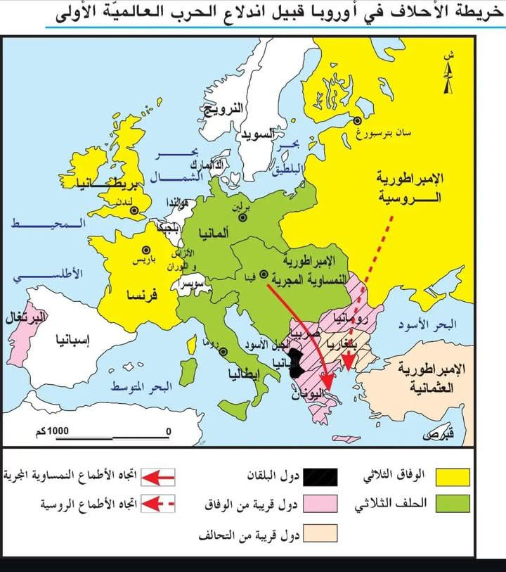

الحرب العالمية الأولى: الأسباب والنتائج
اندلعت الحرب العالمية الأولى في صائفة 1914 نتيجة لاحتدام التوتر بين القوى الإمبريالية الأوروبية منذ الربع الأخير من القرن 19، واستمرت الحرب الكبرى 4 سنوات وأسفرت عن تغييرات جيوسياسية عميقة. فما هي أسبابها وما هي نتائجها؟
I) أسباب الحرب العالمية الأولى
1. احتداد التنافس الاستعماري
أ. احتد التنافس بين القوى الاستعمارية الأوروبية في الربع الأخير من القرن 19 نتيجة لعدة أسباب من أهمها:
نضج الثورة الصناعية وتزايد حاجة أوروبا إلى الأسواق الخارجية لتصدير فوائض الإنتاج الصناعي.
تعرض الاقتصاد الأوروبي إلى "الكساد الكبير" بين 1873 و 1886 وتراجع قيمة الأرباح على الاستثمار، مما دفع إلى ضرورة البحث عن مجال جديد لتصدير رؤوس الأموال.
ظهور قوى أوروبية جديدة تتمثل في كل من ألمانيا وإيطاليا أصبحت تطالب بإعادة تقسيم العالم وبحقها في المستعمرات.
ب. اشتد التنافس الألماني الإنجليزي حيث اعتمد إمبراطور ألمانيا غليوم الثاني سياسة اقتصادية جديدة تعرف بـ "السياسة العالمية" التي ترى أن مستقبل ألمانيا فوق الماء، فعمد إلى تعزيز القوة البحرية الألمانية والتغلغل الاقتصادي في الإمبراطورية العثمانية وآسيا مما أثار مخاوف إنجلترا.
ت. أدى التنافس الاستعماري إلى اندلاع أزمات دولية كادت أن تتحول إلى حروب من بينها:
أزمة فاشودا 1898 بين فرنسا وإنجلترا وانتهت بعقد الوفاق بين الدولتين.
أزمتا المغرب الأقصى بين ألمانيا وفرنسا وتمثلت في أزمة طنجة 1905 وأزمة أغادير 1911، وتمت تسويتهما باعتماد مبدأ الترضيات بتخلي فرنسا عن جزء من مستعمرتها الكونغو لفائدة ألمانيا مقابل الهيمنة على المغرب الأقصى 1912.
أدى تضارب المصالح إلى توتر العلاقات الدولية والدخول في سياسة الأحلاف والسباق نحو التسلح.
2. سياسة الأحلاف والسباق نحو التسلح
أ. سياسة الأحلاف:
الحلف الثلاثي: بادرت ألمانيا في أكتوبر 1879 إلى عقد حلف مع الإمبراطورية النمساوية المجرية قصد عزل فرنسا ومنعها من استرجاع "الألزاس واللوران" التي سيطرت عليها ألمانيا 1870. انضمت إيطاليا إلى الحلف في مارس 1882 تعبيراً عن غضبها من فرض الحماية الفرنسية على تونس (1881). غير أن إيطاليا أمضت اتفاقاً سرياً مع فرنسا للبقاء على الحياد (1902)، ثم انسحبت من الحلف الثلاثي عام 1915 بسبب مطالبها الترابية في مناطق ترياست وترنتان ودلماسيا الخاضعة للسيادة النمساوية، وانتسبت إلى الوفاق الثلاثي بموجب معاهدة لندن السرية التي تعهدت فيها دول الوفاق بتلبية تلك المطالب. ثم تدعّم الحلف الثلاثي لاحقاً بانضمام الإمبراطورية العثمانية (1914) وبلغاريا (1915).
الوفاق الثلاثي: للخروج من عزلتها بادرت فرنسا بعقد وفاق مع إنجلترا 1904 ومع الإمبراطورية الروسية (انسحبت بسبب الثورة البلشفية 1917). كان من أهداف الوفاق الثلاثي تطويق ألمانيا وإخراج فرنسا من عزلتها. ثم تدعّم الوفاق بانضمام اليابان (1914) ورومانيا والبرتغال ثم إيطاليا (1915) والولايات المتحدة الأمريكية (1917).
ب. السباق نحو التسلح:
انخرطت الأحلاف في السباق نحو التسلح بالترفيع من مدة الخدمة العسكرية من سنتين إلى ثلاث سنوات إجبارياً والترفيع في عدد القوات العسكرية، فبلغت سنة 1913 في ألمانيا 820 ألف وفي الإمبراطورية الروسية 1.8 مليون، إلى جانب احتدام التنافس الألماني الإنجليزي في مجال التسلح البحري. كما تدعمت ميزانيات الدفاع وتضاعفت النفقات العسكرية.
3. تأجج الشعور القومي في أوروبا الوسطى ومنطقة البلقان
مثلت أوروبا الوسطى ومنطقة البلقان مجالاً للتوتر نتيجة لعاملين:
تعدد القوميات من سلاف وتشيك ومجريين... التي تسعى إلى تكوين كيانات مستقلة، على غرار سلاف الجنوب الذين استفادوا من دعم صربيا.
تحول المنطقة إلى مسرح للصراع بين الإمبراطورية الروسية (التي كانت تطمح إلى الوصول إلى المياه الدافئة عبر السيطرة على مضيق البسفور) والإمبراطورية النمساوية المجرية (التي كانت تطمح إلى الحصول على منفذ على البحر الأدرياتيكي باحتلال البوسنة والهرسك 1908).
أدى التوتر إلى اندلاع الحروب البلقانية 1912 و1913 وتنامي الحركات القومية مثل الحركة القومية السلافية.
4. حادثة سراييفو واندلاع الحرب الكبرى
تم اغتيال ولي العهد النمساوي فرنسوا فرديناند من قبل طالب بوسني ينتمي إلى حركة قومية سلافية في 28 جوان 1914.
اتهمت النمسا صربيا وحملتها مسؤولية الاغتيال وطالبت بإرسال قضاة للمشاركة في التحقيق، غير أن صربيا رفضت ذلك واعتبرته مساً بسيادتها.
دفع ذلك النمسا إلى إعلان الحرب عليها يوم 28 جويلية 1914 وذلك بتحريض من ألمانيا التي أرسلت إنذاراً إلى كل من فرنسا وإنجلترا، وبحكم الأحلاف القائمة تحولت الحرب من حرب بين طرفين إلى حرب عالمية، كما انضمت دول أخرى إلى الحلفين مثل انضمام اليابان (1914) وإيطاليا (1915) ورومانيا والبرتغال والولايات المتحدة الأمريكية (1917) إلى جانب الوفاق الثلاثي، وانضمام الإمبراطورية العثمانية (1914) وبلغاريا (1915) إلى دول المركز.
II) نتائج الحرب العالمية الأولى
1. الحصيلة البشرية والاقتصادية
أ. الحصيلة البشرية:
أفرزت الحرب 9 ملايين قتيل و17 مليون جريح و6 ملايين عاجز.
تكبدت أوروبا 59% من مجموع القتلى، وتفاوت عدد القتلى بين الدول الأوروبية وتعتبر كل من ألمانيا وروسيا الأكثر تضرراً حيث تراوح عدد القتلى بين 1 و2 مليون.
كما أفرزت الحرب اختلالات عميقة في البنية الديمغرافية بتراجع نسبة الذكور من السكان النشطين، إلى جانب تراجع نسبة الولادات.
ب. الحصيلة الاقتصادية وتغير ميزان القوى:
تدمير أوروبا: تدمير البنى الأساسية من طرقات وجسور... وعجز ميزانية الدول الأوروبية التي لجأت إلى التداين من قبل الولايات المتحدة الأمريكية، ولتسديد ديونها تم اعتماد سياسة التضخم المالي مما أدى إلى تراجع قيمة الفرنك الفرنسي بنسبة 75% والجنيه الإسترليني بنسبة 20% والمارك الألماني بنسبة 90%.
استفادة دول جديدة: استفادت دول جديدة من الحرب العالمية الأولى من بينها اليابان والأرجنتين وكندا، وتعتبر الولايات المتحدة الأمريكية الأكثر استفادة حيث تضاعف إنتاجها الصناعي والفلاحي، ومع نهاية الحرب أصبحت تمتلك نصف المخزون العالمي من الذهب فتحول بذلك مركز الثقل المالي العالمي من لندن إلى نيويورك.
2. مؤتمر الصلح في باريس وصعوبة تسوية النزاع
انعقد مؤتمر الصلح في باريس بقصر فرساي يوم 18 جانفي 1919 واستمرت مداولاته إلى 1920.
هيمن عليه الأربعة الكبار من الدول المنتصرة (إنجلترا - فرنسا - إيطاليا - الولايات المتحدة الأمريكية) بينما تم إقصاء الدول المنهزمة وروسيا.
اختلفت مواقف الدول الكبار بسبب تضارب مصالحها:
الموقف الأمريكي: مثله الرئيس الأمريكي ولسن الذي تقدم ببرنامج يتضمن 14 نقطة ويهدف إلى إرساء السلم في العالم، من أبرز نقاطه الحد من الدبلوماسية السرية والحد من التسلح وحق الشعوب في تقرير مصيرها وتكوين جمعية الأمم.
الموقف الفرنسي: تمثل في إضعاف ألمانيا وتحميلها مسؤولية اندلاع الحرب وإجبارها على دفع التعويضات.
الموقف الإنجليزي: كان ضد إضعاف ألمانيا خوفاً من الهيمنة الفرنسية على القارة الأوروبية.
الموقف الإيطالي: طالبت إيطاليا بتحقيق الوعود الترابية التي تلقتها من الوفاق الثلاثي مقابل تضحياتها أثناء الحرب.
3. جمعية الأمم ومعاهدات السلم
أ. نشأة جمعية الأمم: تأسست جمعية الأمم تطبيقاً للمادة 14 من برنامج الرئيس الأمريكي ولسن، وهي تهدف إلى الحد من التسلح وإرساء السلم في العالم، ولكنها تحولت إلى "نادٍ للمنتصرين" بإقصائها الدول المنهزمة، كما أنها افتقرت إلى وسائل الردع العسكرية ولم تنخرط فيها الولايات المتحدة الأمريكية بسبب رفض الكونغرس الأمريكي، ومن ناحية أخرى خيبت جمعية الأمم آمال الشعوب المستعمرة بسبب مصادقتها على الانتداب الفرنسي والإنجليزي في المشرق العربي والمستعمرات الألمانية.
ب. معاهدات السلم: فرض على الدول معاهدات سلم أدت إلى تفكيكها والحد من قوتها العسكرية والتخلي عن جزء من أراضيها:
معاهدة فرساي: فرضت على ألمانيا في 28 جوان 1919 وتضمنت شروطاً قاسية اعتبرها الألمان سلماً مملاة، وأدت إلى خسارة جزء كبير من أراضيها والتخلي عن مستعمراتها والحد من قوتها العسكرية، كما أجبرت على دفع تعويضات مالية بقيمة 132 مليار مارك.
معاهدة سان جرمان: فرضت على النمسا في سبتمبر 1919.
معاهدة تريانون: فرضت على المجر في جوان 1920.
معاهدة نويي: فرضت على بلغاريا في نوفمبر 1919.
معاهدة سيفر: فرضت على الإمبراطورية العثمانية في أوت 1920 وأدت إلى تفكيكها، وعلى إثر المقاومة التركية بقيادة مصطفى كمال تم تعويضها بمعاهدة لوزان 1923.
4. الخريطة الجيوسياسية الجديدة
أسفرت الحرب والمعاهدات عن ظهور خريطة جيوسياسية جديدة:
انهيار الإمبراطوريات القديمة وزوالها: الإمبراطورية الروسية والنمساوية المجرية والعثمانية.
ظهور دول جديدة، مثل:
بولونيا التي ظهرت على حساب ألمانيا وروسيا.
تشيكوسلوفاكيا التي تكونت على حساب النمسا وألمانيا.
يوغوسلافيا التي جمعت بين صربيا وكرواتيا وسلوفينيا والجبل الأسود والبوسنة والهرسك.
دول البلطيق الثلاثة: ليتونيا ولتوانيا وإستونيا التي استقلت عن روسيا البلشفية.
أسفرت الحرب العالمية الأولى عن تغييرات جيوسياسية عميقة ساهمت في زرع بذور خلافات جديدة مهدت لاندلاع الحرب العالمية الثانية.
📖 تعريفات
👤 شخصيات
- غليوم الثاني – إمبراطور ألمانيا (1888–1918) الذي تبنى سياسة «السياسة العالمية» (Weltpolitik) الهادفة إلى تعزيز النفوذ البحري والاستعماري لألمانيا بعد عزله للمستشار بسمارك. سعى إلى بناء أسطول بحري قوي ينافس البحرية البريطانية، وتغلغل اقتصادياً في الدولة العثمانية وآسيا، مما زاد من عزلة ألمانيا الدولية وأدى إلى توتر علاقاتها مع إنجلترا وفرنسا، ومهد لانخراطها في الحرب العالمية الأولى.
- فرنسوا فرديناند – ولي عهد الإمبراطورية النمساوية المجرية، اغتيل مع زوجته في 28 جوان 1914 بمدينة سراييفو على يد الطالب البوسني غافريلو برينسيب المنتمي لحركة «اليد السوداء» القومية السلافية. اتخذت النمسا من هذا الاغتيال ذريعة لتوجيه إنذار لصربيا ثم إعلان الحرب عليها، مما أشعل سلسلة التحالفات الأوروبية وفجر الحرب العالمية الأولى.
- ولسن (وودرو ويلسون) – رئيس الولايات المتحدة الأمريكية (1913–1921). تقدم في جانفي 1918 ببرنامج «النقاط الأربعة عشر» الذي دعا إلى الدبلوماسية المفتوحة، والحد من التسلح، وحق الشعوب في تقرير مصيرها، وإنشاء جمعية الأمم لضمان السلام. شارك في مؤتمر الصلح بباريس وحاول فرض رؤيته، لكنه فشل في إقناع الكونغرس الأمريكي بالانضمام إلى عصبة الأمم، مما أضعف المنظمة الجديدة.
- مصطفى كمال (أتاتورك) – قائد عسكري تركي وقائد المقاومة الوطنية ضد تقسيم الدولة العثمانية بعد الحرب العالمية الأولى. رفض معاهدة سيفر عام 1920 وقاد حرب الاستقلال التركية التي انتهت بإلغاء السلطنة، وتوقيع معاهدة لوزان 1923 التي اعترفت بتركيا الحديثة. أصبح أول رئيس للجمهورية التركية وأجرى إصلاحات علمانية شاملة غيرت بنية الدولة والمجتمع.
🌍 دول ومناطق
- ألمانيا – قوة إمبريالية صاعدة توحدت عام 1871 وشهدت نمواً صناعياً وعسكرياً متسارعاً. سعت في عهد الإمبراطور غليوم الثاني إلى انتزاع مكانة استعمارية وتوسيع أسطولها البحري، فدخلت في تنافس حاد مع إنجلترا وفرنسا. شكلت مع النمسا-المجر وإيطاليا الحلف الثلاثي، ثم أصبحت القوة المحورية في دول المركز خلال الحرب، وانتهت بهزيمتها وتوقيع معاهدة فرساي التي أثقلتها بتعويضات باهظة واقتطعت أجزاء من أراضيها.
- الإمبراطورية النمساوية المجرية – ملكية مزدوجة متعددة القوميات (سلاف، مجريون، تشيك، …) عاشت توترات داخلية حادة بسبب المطالب القومية. ضمت البوسنة والهرسك عام 1908 مما صعّد الصراع مع صربيا وروسيا في منطقة البلقان. كانت أول من أعلن الحرب على صربيا بعد حادثة سراييفو، وبحكم تحالفاتها انجرفت إلى الحرب العالمية الأولى التي انتهت بتفككها إلى دول قومية صغرى بموجب معاهدات سان جرمان وتريانون.
- صربيا – مملكة سلافية في البلقان سعت إلى توحيد السلاف الجنوبيين تحت رايتها، ودعمت الحركات القومية المناهضة للنمسا داخل البوسنة والهرسك. اتُهمت بالتورط في اغتيال ولي العهد النمساوي، وكان رفضها للإنذار النمساوي سبباً مباشراً في إعلان النمسا الحرب عليها، فانطلقت شرارة الحرب العالمية الأولى. كانت مسرحاً للحروب البلقانية 1912-1913، وأصبحت لاحقاً نواة مملكة الصرب والكروات والسلوفينيين (يوغوسلافيا).
- الإمبراطورية العثمانية – دولة متعددة القوميات كانت تُعرف بـ «رجل أوروبا المريض» بسبب ضعفها المتزايد. انضمت إلى جانب دول المركز في الحرب العالمية الأولى على أمل استعادة أمجادها. بعد الهزيمة، تعرضت للتقسيم بموجب معاهدة سيفر (1920) التي وضعت مناطق واسعة تحت السيطرة الأجنبية. أدى رفض مصطفى كمال لهذه المعاهدة إلى حرب الاستقلال وتوقيع معاهدة لوزان 1923 التي أسست للجمهورية التركية الحديثة.
- الإمبراطورية الروسية – قوة عظمى متعددة القوميات حكمتها أسرة رومانوف، اعتبرت نفسها حامية السلاف الأرثوذكس في البلقان. طمحت للوصول إلى المياه الدافئة عبر مضيق البسفور والدردنيل، فدخلت في صراع مع النمسا-المجر والعثمانية. انضمت إلى الوفاق الثلاثي، لكنها تعرضت لثورة 1917 البلشفية التي أخرجتها من الحرب بتوقيع معاهدة بريست-ليتوفسك، وانتهت الإمبراطورية بسقوط القيصرية.
- الولايات المتحدة الأمريكية – قوة اقتصادية صاعدة ظلت محايدة في بداية الحرب، لكنها دخلتها عام 1917 إلى جانب الوفاق الثلاثي بعد أن تضررت مصالحها التجارية بسبب حرب الغواصات الألمانية غير المقيّدة وقضية تلغراف زيمرمان. قدمت دعماً مالياً وعسكرياً حاسماً، وتحولت بعد الحرب إلى أكبر دائن في العالم ومركز للثقل المالي العالمي بانتقاله من لندن إلى نيويورك. كما حاول الرئيس ولسن صياغة سلام قائم على مبادئه المثالية.
- فرنسا – إحدى القوى الأوروبية الكبرى التي خسرت إقليمي الألزاس واللوران لصالح ألمانيا بعد حرب 1870، فظلت تطمح لاستعادتهما والثأر. بادرت بعقد تحالفات (الوفاق الودي مع إنجلترا عام 1904، والوفاق الروسي) للخروج من عزلتها وتطويق ألمانيا. تحملت العبء الأكبر من القتال على الجبهة الغربية، وسعت في مؤتمر الصلح إلى فرض شروط قاسية على ألمانيا لإضعافها وضمان أمنها القومي.
- إنجلترا – أكبر قوة بحرية واستعمارية آنذاك، اعتمدت سياسة «التوازن الأوروبي» لمنع هيمنة أي دولة على القارة. شعرت بتهديد متزايد من طموحات ألمانيا البحرية والاستعمارية، فدخلت الحرب بعد خرق ألمانيا لحياد بلجيكا. لعبت دوراً محورياً في فرض الحصار البحري على دول المركز، كما كانت طرفاً أساسياً في مؤتمر الصلح وسعت إلى إضعاف ألمانيا دون تدميرها بالكامل للحفاظ على التوازن الأوروبي.
- بلغاريا – مملكة بلقانية خسرت أراضي واسعة في حرب البلقان الثانية (1913)، مما دفعها للانضمام إلى دول المركز عام 1915 سعياً لاستعادة مقدونيا ومناطق أخرى. شاركت في العمليات العسكرية ضد صربيا ورومانيا، وانتهت الحرب بتوقيعها معاهدة نويي (1919) التي فرضت عليها قيوداً عسكرية وخسائر إقليمية جديدة.
- اليابان – قوة آسيوية صاعدة انضمت إلى الوفاق الثلاثي في أوت 1914، واستولت على المستعمرات الألمانية في الصين والمحيط الهادئ (مثل شاندونغ وجزر ماريانا وكارولين). استفادت اقتصادياً من الحرب بتوسع صناعاتها وصادراتها، وجلست على طاولة المنتصرين في مؤتمر الصلح، مما عزز مكانتها الدولية.
- رومانيا – مملكة بلقانية انضمت إلى الوفاق الثلاثي عام 1916 بعد تلقّي وعود بالحصول على أراضٍ نمساوية مجرية (ترانسلفانيا). تعرضت لهزيمة سريعة واحتلال جزئي، لكنها استفادت من انتصار الوفاق في نهاية الحرب، وتوسعت إقليمياً بشكل كبير بموجب معاهدات الصلح.
- البرتغال – جمهورية صغيرة دخلت الحرب إلى جانب الوفاق الثلاثي عام 1916 دفاعاً عن مستعمراتها الإفريقية ومصالحها التجارية مع بريطانيا. شاركت بقوات محدودة على الجبهة الغربية، واستفادت معنوياً من موقعها ضمن الدول المنتصرة.
⚔️ أحداث هامة
- أزمة فاشودا (1898) – مواجهة استعمارية كادت تشعل حرباً بين فرنسا وإنجلترا في منطقة فاشودا بالسودان، حين التقت بعثة فرنسية تهدف لربط ممتلكاتها من الغرب إلى الشرق مع القوات البريطانية المتجهة جنوباً من مصر. انتهت الأزمة بانسحاب فرنسا دبلوماسياً ومهدت لتسوية الخلافات الاستعمارية بين البلدين، ثم لتوقيع الوفاق الودي (Entente Cordiale) عام 1904.
- أزمة طنجة (1905) – أولى الأزمات المغربية، أثارها الإمبراطور غليوم الثاني بزيارته إلى طنجة ودعمه لاستقلال المغرب في وجه الطموحات الفرنسية. أدت إلى انعقاد مؤتمر الجزيرة الخضراء (1906) الذي أكد سيادة المغرب مع إعطاء فرنسا وإسبانيا امتيازات أمنية. فشلت ألمانيا في كسر الوفاق الفرنسي-البريطاني بل زادت من تماسكه.
- أزمة أغادير (1911) – أزمة مغربية ثانية أرسلت خلالها ألمانيا الزورق الحربي «بانثر» إلى ميناء أغادير احتجاجاً على تقدم النفوذ الفرنسي في المغرب. سُويت الأزمة بتقديم تنازلات استعمارية لألمانيا (جزء من الكونغو الفرنسي) مقابل قبولها بالحماية الفرنسية على المغرب 1912. عمقت الأزمة الكراهية بين فرنسا وألمانيا وسرّعت سباق التسلح.
- الاتفاق السري بين إيطاليا وفرنسا (1902) – اتفاق دبلوماسي سري وقّعته إيطاليا مع فرنسا، تعهدت بموجبه روما بالبقاء على الحياد في حال تعرضت فرنسا لهجوم ألماني، رغم كون إيطاليا لا تزال عضواً في الحلف الثلاثي. كشف هذا الاتفاق هشاشة الحلف الثلاثي وازدواجية التحالفات الأوروبية قبل الحرب.
- حادثة سراييفو (28 جوان 1914) – اغتيال الأرشيدوق فرنسوا فرديناند، ولي عهد النمسا-المجر، وزوجته على يد الطالب الصربي البوسني غافريلو برينسيب في سراييفو. اعتبرته النمسا دليلاً على تورط صربيا في دعم الإرهاب، فوجهت إليها إنذاراً قاسياً ثم أعلنت الحرب، مما فجّر نظام التحالفات الأوروبية وأشعل الحرب العالمية الأولى.
- الحروب البلقانية (1912-1913) – حربان متعاقبتان في منطقة البلقان: الأولى (1912) شنتها عصبة البلقان (صربيا، بلغاريا، اليونان، الجبل الأسود) ضد الدولة العثمانية وانتزعت منها معظم أراضيها الأوروبية. الثانية (1913) نشبت بين بلغاريا من جهة وحلفائها السابقين إلى جانب رومانيا والعثمانيين من جهة أخرى. انتهت بهزيمة بلغاريا وزيادة التوتر الإقليمي، مما جعل البلقان «برميل بارود» أوروبا.
- الثورة البلشفية (1917) – ثورة قادها فلاديمير لينين والحزب البلشفي في روسيا في أكتوبر 1917، أطاحت بالحكومة المؤقتة وأقامت نظاماً شيوعياً. كان من أول قراراتها الانسحاب من الحرب العالمية الأولى عبر توقيع معاهدة بريست-ليتوفسك مع ألمانيا في مارس 1918، مما حرر القوات الألمانية للتركيز على الجبهة الغربية وأثر على مجرى الحرب.
- مؤتمر الصلح في باريس (1919) – انعقد في جانفي 1919 بقصر فرساي بحضور ممثلي الدول المنتصرة وعلى رأسهم «الأربعة الكبار» (فرنسا، إنجلترا، إيطاليا، الولايات المتحدة) بينما أُقصيت الدول المنهزمة وروسيا البلشفية. أسفر عن سلسلة من معاهدات السلام التي أعادت رسم خريطة أوروبا والشرق الأوسط، وقررت إنشاء عصبة الأمم، لكن إملاء شروط قاسية على المنهزمين زرع بذور الحرب العالمية الثانية.
📜 معاهدات
- معاهدة لندن السرية (1915) – اتفاق سري بين إيطاليا ودول الوفاق الثلاثي (فرنسا، إنجلترا، روسيا) وعد إيطاليا بالحصول على أراضٍ نمساوية (ترياست، ترنتينو، أجزاء من دلماسيا) ومستعمرات ألمانية في إفريقيا مقابل دخولها الحرب إلى جانب الوفاق. شكل هذا الاتفاق الإطار القانوني لانسحاب إيطاليا من الحلف الثلاثي وانضمامها للحلف المقابل.
- معاهدة فرساي (1919) – وُقعت في 28 جوان 1919، وفرضت على ألمانيا شروطاً قاسية: الاعتراف بمسؤوليتها عن الحرب (المادة 231)، دفع تعويضات مالية ضخمة (132 مليار مارك ذهبي)، فقدان الألزاس واللوران لصالح فرنسا وممر دانزيغ لصالح بولونيا، وتجريد جيشها من السلاح الثقيل مع تقليص عدده إلى 100 ألف جندي. اعتبرها الألمان «سلاماً مُذِلاً» وكانت أحد أسباب صعود النازية لاحقاً.
- معاهدة سان جرمان (1919) – وُقعت في سبتمبر 1919 مع النمسا، وقضت بتفكيك ما تبقى من الإمبراطورية النمساوية المجرية، واعترفت بدول جديدة مثل تشيكوسلوفاكيا وبولونيا ويوغوسلافيا، وحظرت اتحاد النمسا بألمانيا (الأنشلوس)، وفرضت قيوداً عسكرية وتعويضات على النمسا.
- معاهدة تريانون (1920) – وُقعت مع المجر في جوان 1920، فقدت بموجبها المجر حوالي ثلثي أراضيها السابقة لمصلحة رومانيا وتشيكوسلوفاكيا ويوغوسلافيا، مما ترك أقلية مجرية كبيرة خارج حدودها وأثار شعوراً عميقاً بالظلم في الأوساط القومية المجرية.
- معاهدة نويي (1919) – عقدت في نوفمبر 1919 مع بلغاريا، ألزمتها بالتنازل عن أراضٍ لليونان ويوغوسلافيا، وفرضت عليها قيوداً عسكرية صارمة إلى جانب دفع تعويضات مالية، مما جعلها من أكثر الدول تضرراً في البلقان بعد الحرب.
- معاهدة سيفر (1920) – فُرضت على الدولة العثمانية في أوت 1920، وقضت بتجريدها من أراضيها غير التركية: وضع مناطق عربية تحت الانتداب، ومنحت اليونان إدارة إزمير، وفتحت مضيقي البوسفور والدردنيل للملاحة الدولية، ووعدت بإنشاء دولة أرمينية وكيان كردي. رفضها مصطفى كمال وقاد حرب الاستقلال التي أسقطتها.
- معاهدة لوزان (1923) – حلت محل معاهدة سيفر في جويلية 1923 بعد انتصار الأتراك في حرب الاستقلال. اعترفت بحدود تركيا الحديثة، وألغت الامتيازات الأجنبية، وضمنت السيادة التركية على إزمير وتراقيا الشرقية، وأبقت على نظام المضايق مقيداً، وشكلت الأساس القانوني للجمهورية التركية الوليدة.
📌 أخرى
- السياسة العالمية – تعريب لمصطلح «Weltpolitik» وهي الاستراتيجية التوسعية التي انتهجها الإمبراطور غليوم الثاني بعد إقالة بسمارك عام 1890. هدفت إلى بناء أسطول بحري ضخم (خطة تيربيتز)، واقتناص مستعمرات في إفريقيا وآسيا، ومد نفوذ اقتصادي عبر مشروع سكة حديد برلين-بغداد. أدت هذه السياسة إلى صدام مباشر مع المصالح البريطانية والفرنسية والروسية وساهمت في تشكيل أحلاف مضادة لألمانيا.
- الكساد الكبير – أزمة اقتصادية عالمية ضربت الاقتصاديات الرأسمالية بين 1873 و1896 (أو حتى 1886). تراجعت خلالها الأسعار والأرباح وزادت البطالة، مما دفع الدول الأوروبية إلى فرض سياسات حمائية والبحث عن أسواق خارجية لتصريف فائض الإنتاج ورؤوس الأموال، فاشتد التنافس الاستعماري وزاد التوتر بين القوى الكبرى.
- الحلف الثلاثي – تحالف عسكري دفاعي نشأ تدريجياً بين ألمانيا والإمبراطورية النمساوية المجرية (أكتوبر 1879) وانضمت إليه إيطاليا في مارس 1882. هدف في الأصل إلى عزل فرنسا والحفاظ على الوضع القائم في أوروبا. ثم تعزز بانضمام الدولة العثمانية (1914) وبلغاريا (1915) ليشكل نواة «دول المركز» خلال الحرب العالمية الأولى.
- الوفاق الثلاثي – تكتل سياسي وعسكري ضم فرنسا وإنجلترا والإمبراطورية الروسية، تشكل عبر سلسلة من الاتفاقيات الثنائية (الوفاق الودي 1904، الوفاق الروسي-الفرنسي، الاتفاق الإنجليزي-الروسي 1907). كان يهدف إلى تطويق ألمانيا وإخراج فرنسا من عزلتها الدبلوماسية. اتسع لاحقاً لينضم إليه اليابان وإيطاليا ورومانيا والبرتغال والولايات المتحدة أثناء الحرب.
- جمعية الأمم – منظمة دولية أنشئت بموجب معاهدة فرساي عام 1920 ومقرها جنيف، استناداً إلى المبدأ الرابع عشر من برنامج ولسن. هدفها المعلن هو ضمان الأمن الجماعي والحد من التسلح وتسوية النزاعات سلمياً. لكنها افتقرت إلى جيش دائم، وتطلبت قراراتها الإجماع، ولم تنضم إليها الولايات المتحدة، فتحولت فعلياً إلى أداة بيد الدول المنتصرة وعجزت عن منع العدوانيات التي أدت لاحقاً إلى الحرب العالمية الثانية.
- الانتداب – نظام وصاية استعماري أقره ميثاق عصبة الأمم (المادة 22) لإدارة الأراضي المنتزعة من الدول المنهزمة (المستعمرات الألمانية والأقاليم العثمانية غير التركية). صُنفت الانتدابات إلى فئات (أ، ب، ج) بحسب درجة «نضجها السياسي». في المشرق العربي، وضعت سوريا ولبنان تحت الانتداب الفرنسي، وفلسطين والعراق تحت الانتداب البريطاني. رُفع شعار «مساعدة الشعوب على بلوغ الاستقلال»، لكن الانتداب طُبق كاستعمار مقنع.
🗺️ خرائط ومعطيات مصورة

خريطة أوروبا 1914

سلم زمني للحرب العالمية الأولى

الرئيس وودرو ويلسون